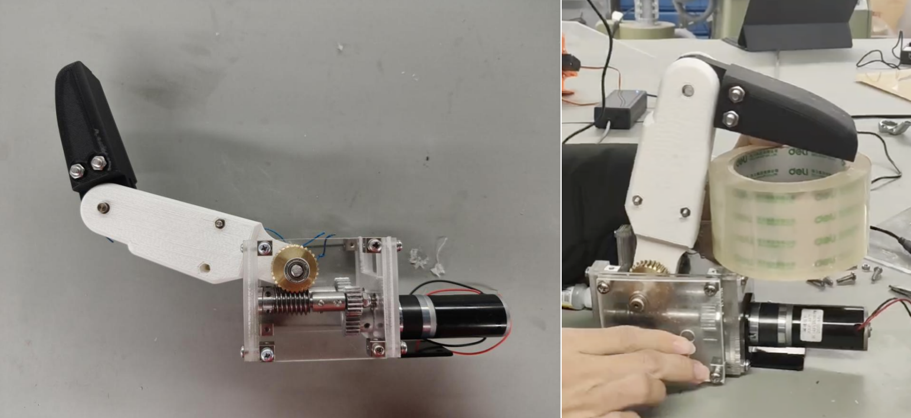

Selected Projects
Robotic manipulation, compliant mechanisms, and experimental prototypes.
-

Variable Stiffness Manipulator
A cable driven arm that changes its stiffness through its transmission geometry.
-

Underactuated Three-Finger Gripper
A seven degree of freedom gripper designed to conform to objects during contact.
-

Konka-1 Head & Neck
A compact yaw and pitch assembly for a household humanoid.
-

Flexible Gripper Concepts
Two concepts for preserving clamping force near full closure.
-

Biomimetic Swimmer
A 3D printed test platform for helical propulsion in viscous fluids.
-

Wearable Stimulation Prototype
Embedded electronics for a compact galvanic vestibular stimulation device.